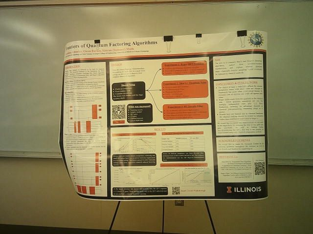
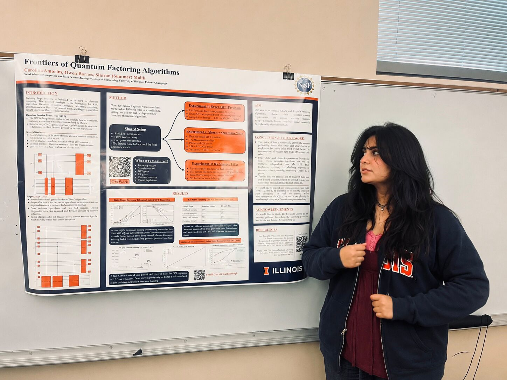

July 27, 2026 - August 2, 2026
Status: In progress
This week is still in progress, but one of the biggest things so far is that I presented the poster. Presenting was honestly really nice. People were interested in the project, and it felt good to see that the work could start a conversation instead of only living in code, notes, and experiments.
I also shared a post about the presentation here: LinkedIn post.
One thing that helped a lot was comparing the motivation to RSA encryption. Since many people have heard that RSA depends on factoring being hard, it gave the audience a familiar doorway into the project. From there, it was easier to explain why quantum factoring algorithms matter, why Shor's algorithm is important, and why newer Regev-style approaches are interesting to study. That comparison made the project feel much less abstract for people who were not already thinking about quantum algorithms every day.
I also noticed that explaining the work out loud is different from writing about it. In the poster, I had to compress a lot: quantum circuits, QFT precision, lattice post-processing, noise, tests, and reproducibility. During the presentation, I could slow down and respond to what people actually understood or asked about. That made the project feel more alive. It also showed me which explanations are working and which parts still need a better story.


Our advisor has also been talking with us about studying constants more carefully and adding that into the experiments. I understand this as moving beyond only saying what the asymptotic complexity should be and asking what the actual finite-resource costs look like in the regimes we can test.
For this project, that means paying closer attention to the hidden constants inside the circuit complexity and post-processing pipeline. A theoretical expression can say that one approach scales better, but the constant factors still matter a lot when the circuits are finite, noisy, and meant to be simulated or estimated concretely. If those constants are large, the practical resource picture can look very different from the high-level asymptotic story.
The next version of the experiments should make that more visible. Instead of only comparing whether a sample or lattice instance succeeds, we can also track quantities like circuit size, gate counts, QFT precision requirements, number of dimensions, number of shots, synthetic input sizes, post-processing cost, and how these quantities change as parameters grow. This would make it easier to compare the circuit complexity in a more concrete way.
I think the advisor's point is that the project should not only ask, "Does this work on this example?" It should also ask, "What is the real cost of making it work, and how do those costs grow?" That is a sharper question, and it connects the experimental part of the project back to the theoretical resource claims.
Right now I am still working through how to add this cleanly. I want the constant and circuit-complexity experiments to fit with the rest of the pipeline instead of becoming a separate pile of numbers. Ideally, the experiments should connect the mathematical parameters, the generated circuits, the noisy sampling behavior, and the lattice endpoint in one reproducible path.
I am also continuing to think about how to explain the project more clearly. The presentation helped me see that familiar examples, like RSA encryption, can make the work much easier to understand. I want to keep using that kind of explanation while still being honest about the technical details.
For the rest of this week, I want to keep refining the constant-factor and circuit-complexity direction. The goal is to design experiments that compare resource costs synthetically across parameter choices, while still connecting those costs to the actual Regev-style circuit and lattice recovery pipeline.
I also want to keep improving the presentation story, because the audience questions gave me a better sense of what people need first: why factoring matters, how RSA connects to the problem, what quantum algorithms change, and why finite noisy experiments are important.